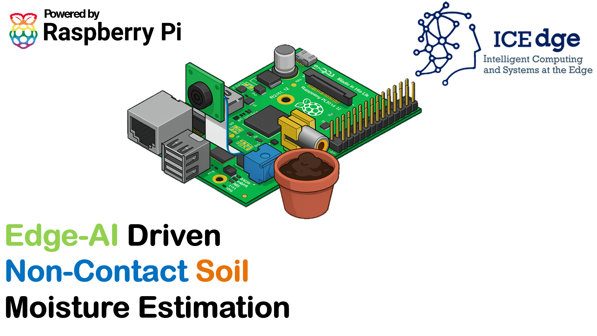

Striving for depth
Research.
This is what I do in the lab.

Bachelor's Thesis · IECON 2026
AcceptedRobust Control for Skid-Steer Autonomous UGVs
My B.Tech thesis work at IITK which was partly supported by CPRI, India. One of the applications of skid-Steer autonomous UGVs is power substation inspection. These substations often have sharp 90-degree turns and the robots should be able to swiftly maneuver these turns without overshooting or colliding into surrounding structures. This study compares three cascaded control architectures to find a feasible solution.
Read ↗
Conference Paper · ICEdge 2025
PublishedReal-Time Non-Contact Soil Moisture Estimation Using Machine Learning at the Edge
This paper proposes a non-contact, image-based approach to soil moisture estimation using machine learning models deployed on embedded hardware. We evaluate three classifiers: a pre-trained VGG16 model, Random Forest Regressor, and Support Vector Machine (SVM).
Read ↗